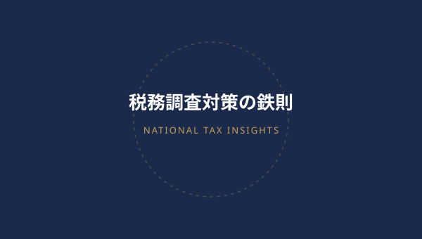
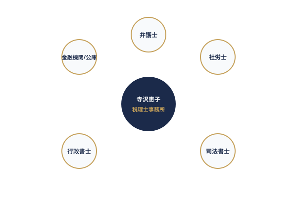

元国税統括官が教える「税務調査で慌てないための3つの鉄則」
税務署21年在職・法人課税部門の統括官として数多くの調査を指揮した経験から、調査官の着眼点と事前準備のポイントを徹底解説。
記事を読む →元国税統括官の視点を交えた実践的な税務調査対策から、クラウド会計の活用術、社労士連携による助成金情報まで分かりやすくお届けします。

freeeやマネーフォワードの自動仕訳ルール構築。手入力をゼロにし、試算表を翌月初にリアルタイム確認できる体制の作り方。
公開中
提携のザワテラス社労士と連携し、キャリアアップ助成金をはじめとした創業期の資金調達と制度活用を分かりやすく解説。
公開中